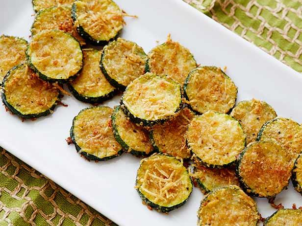

Zucchini Parmesan Chips

Healthy zucchini chips made with simple ingredients
Looking for a crispy snack with nutrients? Check out these parmesan zucchini chips! So good and easy to make at home.
Ingredients:
- zucchini
- ranch seasoning packet
- olive oil
- shredded parmesan
Steps:
- Slice zucchini into rounds. Add oil, ranch seasoning, and parmesan to your liking (we like lots of parm)
- Place on baking sheet and bake at 425F for 20 minutes
Back to home